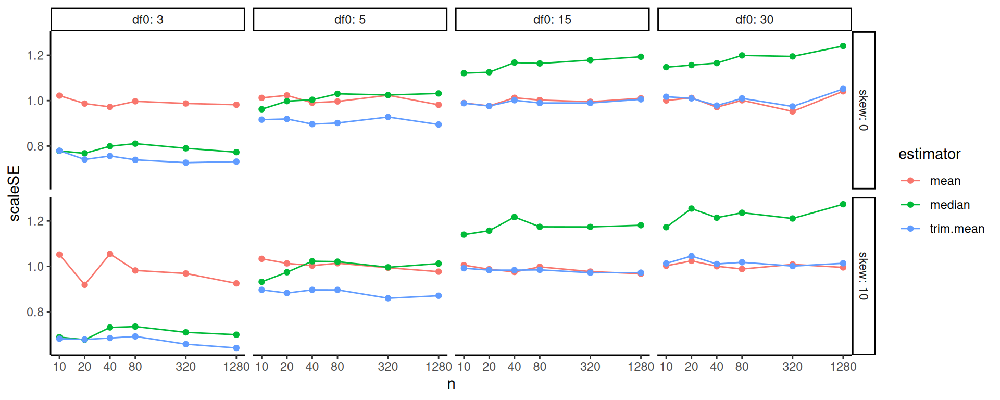

Chapter 14 Special Topics on Reporting Simulation Results
In this chapter we cover some special topics on reporting simulation results. We first walk through some examples of how to do regression modeling. We then dive more deeply into what to do when you have only a few iterations per scenario, and then we discuss what to do when you are evaluating methods that sometimes fail to converge or give an answer.
14.1 Using regression to analyze simulation results
In Chapter 12 we saw some examples of using regression and ANOVA on a set of simulation results to summarize overall patterns across scenarios. In this chapter we will provide some further in-depth examples along with the R code for doing this sort of thing.
14.1.1 Example 1: Biserial, revisited
As our first in depth example, we walk through the analysis that produces the final ANOVA summary table for the biserial correlation example in Chapter 12. In the visualization there, we saw that several factors appeared to impact bias. On the eta table presented later in that same chapter, we saw a table that decomposed the variance across several factors so we could see which simulation factors mattered most for bias.
To build that table, we first fit a regression model, regressing bias on all the simulation factors. We first convert each factor to a factor variable, so that R does not assume a continuous relationship.
options(scipen = 5)
mod = lm( bias ~ fixed + rho + I(rho^2) + p1 + n, data = r_F)
summary(mod, digits=2)##
## Call:
## lm(formula = bias ~ fixed + rho + I(rho^2) + p1 + n, data = r_F)
##
## Residuals:
## Min 1Q Median 3Q
## -0.0215935 -0.0013608 0.0003823 0.0015677
## Max
## 0.0081802
##
## Coefficients:
## Estimate Std. Error
## (Intercept) -0.00186446 0.00017971
## fixedSample cut-off -0.00363520 0.00009733
## rho -0.00942338 0.00069578
## I(rho^2) 0.00720857 0.00070868
## p1p1 = 1/3 0.00358696 0.00015390
## p1p1 = 1/4 0.00482709 0.00015390
## p1p1 = 1/5 0.00547657 0.00015390
## p1p1 = 1/8 0.00635532 0.00015390
## n.L 0.00362949 0.00010882
## n.Q -0.00103981 0.00010882
## n.C 0.00027941 0.00010882
## n^4 0.00001976 0.00010882
## t value Pr(>|t|)
## (Intercept) -10.375 <2e-16 ***
## fixedSample cut-off -37.347 <2e-16 ***
## rho -13.544 <2e-16 ***
## I(rho^2) 10.172 <2e-16 ***
## p1p1 = 1/3 23.307 <2e-16 ***
## p1p1 = 1/4 31.365 <2e-16 ***
## p1p1 = 1/5 35.585 <2e-16 ***
## p1p1 = 1/8 41.295 <2e-16 ***
## n.L 33.352 <2e-16 ***
## n.Q -9.555 <2e-16 ***
## n.C 2.568 0.0103 *
## n^4 0.182 0.8559
## ---
## Signif. codes:
## 0 '***' 0.001 '**' 0.01 '*' 0.05 '.' 0.1 ' ' 1
##
## Residual standard error: 0.003372 on 4788 degrees of freedom
## Multiple R-squared: 0.5107, Adjusted R-squared: 0.5096
## F-statistic: 454.4 on 11 and 4788 DF, p-value: < 2.2e-16The above printout gives main effects for each factor, averaged across the others.
Because p1 and n are ordered factors, the lm() command automatically generates linear, quadratic, cubic and fourth order contrasts for them.
We smooth our rho factor, which has many levels of a continuous measure, with a quadratic curve.
We could instead use splines or some local linear regression if we were worried about model fit for a complex relationship.
The main effects are summaries of trends across contexts. For example, averaged across the other contexts, the “sample cutoff” condition is around 0.004 lower than the population (the baseline condition).
As shown in Chapter 12, we can also use ANOVA to get a sense of the major sources of variation in the simulation results (e.g., identifying which factors have negligible/minor influence on the bias of an estimator).
To do this, we use aov() to fit an analysis of variance model:
anova_table <- aov(bias ~ rho * p1 * fixed * n, data = r_F)
knitr::kable( summary(anova_table)[[1]],
digits = c(0,4,4,1,5) )| Df | Sum Sq | Mean Sq | F value | Pr(>F) | |
|---|---|---|---|---|---|
| rho | 1 | 0.0024 | 0.0024 | 1673.3 | 0 |
| p1 | 4 | 0.0236 | 0.0059 | 4036.4 | 0 |
| fixed | 1 | 0.0159 | 0.0159 | 10854.5 | 0 |
| n | 4 | 0.0138 | 0.0034 | 2354.6 | 0 |
| rho:p1 | 4 | 0.0017 | 0.0004 | 294.7 | 0 |
| rho:fixed | 1 | 0.0034 | 0.0034 | 2354.7 | 0 |
| p1:fixed | 4 | 0.0017 | 0.0004 | 288.0 | 0 |
| rho:n | 4 | 0.0020 | 0.0005 | 342.3 | 0 |
| p1:n | 16 | 0.0198 | 0.0012 | 847.5 | 0 |
| fixed:n | 4 | 0.0134 | 0.0033 | 2286.0 | 0 |
| rho:p1:fixed | 4 | 0.0005 | 0.0001 | 80.9 | 0 |
| rho:p1:n | 16 | 0.0015 | 0.0001 | 62.9 | 0 |
| rho:fixed:n | 4 | 0.0029 | 0.0007 | 501.2 | 0 |
| p1:fixed:n | 16 | 0.0014 | 0.0001 | 61.1 | 0 |
| rho:p1:fixed:n | 16 | 0.0004 | 0.0000 | 18.4 | 0 |
| Residuals | 4700 | 0.0069 | 0.0000 | NA | NA |
The advantage here is the multiple levels of our categorical factors get bundled together in our table of results, making a tidier display. Note we are including interactions between our simulation factors. The prior linear regression model was just estimating main effects of the factors, and not estimating these more complex relationships.
The eta table in Chapter 12 is a summary of this anova table, which we generate as follows:
library(lsr)
etaSquared(anova_table) %>%
as.data.frame() %>%
rownames_to_column("source") %>%
mutate( order = 1 + str_count(source, ":" ) ) %>%
group_by( order ) %>%
arrange( -eta.sq, .by_group = TRUE ) %>%
relocate( order ) We group the results by the order of the interaction, so that we can see the main effects first, then two-way interactions, and so on. We then sort within each group to put the high importance factors first. The resulting variance decomposition table shows the amount of variation explained by each combination of factors.
14.1.2 Example 2: Cluster RCT example, revisited
When we have several methods to compare, we can use meta-regression to understand how these methods change as other simulation factors change. We next illustrate this with our running Cluster RCT example.
We first turn our simulation levels (except for ICC, which has several levels) into factors, so R does not assume that sample size, for example, should be treated as a continuous variable:
sres_f <-
sres %>%
mutate(
across( c( n_bar, J, size_coef, alpha ), factor ),
ICC = as.numeric(ICC)
)
# Run the regression
M <- lm( bias ~ (n_bar + J + size_coef + ICC + alpha) * method,
data = sres_f )
# View the results
tidy( M ) %>%
knitr::kable( digits = 3 )| term | estimate | std.error | statistic | p.value |
|---|---|---|---|---|
| (Intercept) | 0.002 | 0.003 | 0.872 | 0.384 |
| n_bar80 | -0.003 | 0.002 | -1.295 | 0.196 |
| n_bar320 | -0.001 | 0.002 | -0.657 | 0.511 |
| J20 | -0.002 | 0.002 | -0.991 | 0.322 |
| J80 | -0.002 | 0.002 | -0.885 | 0.376 |
| size_coef0.2 | 0.003 | 0.002 | 1.537 | 0.125 |
| ICC | 0.001 | 0.003 | 0.272 | 0.786 |
| alpha0.5 | -0.002 | 0.002 | -1.179 | 0.239 |
| alpha0.8 | 0.001 | 0.002 | 0.419 | 0.676 |
| methodLR | -0.012 | 0.004 | -3.060 | 0.002 |
| methodMLM | 0.001 | 0.004 | 0.191 | 0.849 |
| n_bar80:methodLR | 0.000 | 0.003 | 0.037 | 0.971 |
| n_bar320:methodLR | 0.000 | 0.003 | -0.004 | 0.997 |
| n_bar80:methodMLM | 0.000 | 0.003 | -0.170 | 0.865 |
| n_bar320:methodMLM | -0.001 | 0.003 | -0.362 | 0.718 |
| J20:methodLR | 0.005 | 0.003 | 1.722 | 0.085 |
| J80:methodLR | 0.006 | 0.003 | 1.946 | 0.052 |
| J20:methodMLM | 0.001 | 0.003 | 0.354 | 0.723 |
| J80:methodMLM | 0.001 | 0.003 | 0.420 | 0.675 |
| size_coef0.2:methodLR | 0.016 | 0.002 | 6.741 | 0.000 |
| size_coef0.2:methodMLM | 0.003 | 0.002 | 1.294 | 0.196 |
| ICC:methodLR | 0.000 | 0.004 | -0.062 | 0.951 |
| ICC:methodMLM | -0.006 | 0.004 | -1.482 | 0.139 |
| alpha0.5:methodLR | 0.006 | 0.003 | 2.210 | 0.027 |
| alpha0.8:methodLR | 0.017 | 0.003 | 5.868 | 0.000 |
| alpha0.5:methodMLM | 0.001 | 0.003 | 0.434 | 0.664 |
| alpha0.8:methodMLM | 0.003 | 0.003 | 1.091 | 0.275 |
With even a modestly complex simulation, we can quickly generate a lot of regression coefficients, making our meta-regression somewhat hard to interpret. The above model does not even have interactions between the simulation factors, even though the plots we have seen strongly suggest interactions among them. That said, picking out the significant coefficients is a quick way to obtain clues as to what is driving performance. For instance, several features interact with the LR method for bias. The other two methods seem less impacted.
14.1.2.1 Using LASSO to simplify the model
We can simplify a meta regression model using LASSO regression, to drop coefficients that are less relevant. This requires some work to make our model matrix of dummy variables with all the interactions. If using LASSO, we recommend fitting a separate model to each method being considered; the set of fit LASSO models can then be compared to see which methods react to what factors, and how.
We first illustrate with LR, and then extend to all three. To use the LASSO we have to prepare our data first by hand—this involves converting all our factors to sets of dummy variables for the regression. We also generate all interaction terms up to the cubic level.
library(modelr)
library(glmnet)
sres_f_LR <- sres_f %>%
filter( method == "LR" )
# Create model matrix
form <- bias ~ ( n_bar + J + size_coef + ICC + alpha )^3
X <- model.matrix(form, data = sres_f_LR)[, -1]
# The [,-1] drops the intercept
dim(X)## [1] 270 71# Fit LASSO
fit <- cv.glmnet(X, sres_f_LR$bias, alpha = 1)
# Non-zero coefficients
coef(fit, s = "lambda.1se") %>%
as.matrix() %>%
as.data.frame() %>%
rownames_to_column("term") %>%
filter(abs(lambda.1se) > 0) %>%
knitr::kable(digits = 3)| term | lambda.1se |
|---|---|
| (Intercept) | 0.004 |
| size_coef0.2 | 0.003 |
| size_coef0.2:alpha0.8 | 0.022 |
Note we have 71 covariates due to the many, many interactions and the fact that our sample sizes, etc., are all factors, not continuous.
When using regression, and especially LASSO, which levels are baseline can impact the final results.
We have our smallest sample sizes, no variation, 0 ICC, and no size_coef as baseline.
We might imagine that other choices of baseline could suddenly make other factors appear with large coefficients.
One trick to avoid selecting a baseline is to give dummy variables for all the factors, and fit LASSO with the colinear terms.
Due to regularization, this would still work; we do not pursue this here, however.
We next bundle the above to make three models, one for each method. We first rescale ICC to be on a 5 point scale to control it’s relative coefficient size to the dummy variables, and then add a new feature of “zeroICC” as well (recalling the prior plots that showed ICC being 0 was unusual).
meth = c( "LR", "MLM", "Agg" )
sres_f$zeroICC = ifelse( sres_f$ICC == 0, 1, 0 )
sres_f$ICCsc = sres_f$ICC * 5 # rescale ICC to be on a 5 point scale
models <- map( meth, function(m) {
sres_f_LR <- sres_f %>%
filter( method == m )
form <- bias ~ ( n_bar + J + size_coef + ICCsc + alpha + zeroICC )^3
X <- model.matrix(form, data = sres_f_LR)[, -1]
fit <- cv.glmnet(X, sres_f_LR$bias, alpha = 1)
coef(fit, s = "lambda.min") %>%
as.matrix() %>%
as.data.frame() %>%
rownames_to_column("term") %>%
rename( estimate = lambda.min ) %>%
filter(abs(estimate) > 0)
} )
models <-
models %>%
set_names(meth) %>%
bind_rows( .id = "model" )
m_res <- models %>%
dplyr::select( model, term, estimate ) %>%
pivot_wider( names_from="model", values_from="estimate" ) %>%
mutate(order = str_count(term, ":")) %>%
arrange(order) %>%
relocate(order)
options(knitr.kable.NA = '')
m_res %>%
knitr::kable( digits = 3 ) %>%
print( na.print = "" )##
##
## | order|term | LR| MLM| Agg|
## |-----:|:------------------------------|-----:|------:|-----:|
## | 0|(Intercept) | 0.000| 0.001| 0.001|
## | 0|size_coef0.2 | 0.003| 0.001| |
## | 0|n_bar80 | | 0.000| |
## | 1|J20:alpha0.8 | 0.001| | |
## | 1|size_coef0.2:ICCsc | 0.000| | |
## | 1|size_coef0.2:alpha0.5 | 0.007| | |
## | 1|size_coef0.2:alpha0.8 | 0.026| 0.003| |
## | 1|n_bar80:ICCsc | | 0.000| |
## | 1|J20:ICCsc | | 0.000| |
## | 1|ICCsc:alpha0.5 | | 0.000| |
## | 2|n_bar320:J20:ICCsc | 0.000| -0.001| |
## | 2|n_bar80:J20:alpha0.8 | 0.003| 0.005| |
## | 2|n_bar320:size_coef0.2:alpha0.5 | 0.003| 0.001| |
## | 2|J80:size_coef0.2:alpha0.5 | 0.001| | |
## | 2|J20:size_coef0.2:alpha0.8 | 0.007| | |
## | 2|J80:size_coef0.2:alpha0.8 | 0.008| | |
## | 2|size_coef0.2:ICCsc:alpha0.8 | 0.000| | |
## | 2|n_bar80:size_coef0.2:ICCsc | | 0.000| |
## | 2|J80:size_coef0.2:zeroICC | | 0.002| |
## | 2|size_coef0.2:alpha0.5:zeroICC | | 0.002| |
## | 2|size_coef0.2:alpha0.8:zeroICC | | 0.014| |Of course, this is table is hard to read. Better to instead plot the coefficients:
lvl = m_res$term
m_resL <- m_res %>%
pivot_longer( -c( order, term ),
names_to = "model", values_to = "estimate" ) %>%
mutate( term = factor(term, levels = rev(lvl) ) )
ggplot( m_resL,
aes( x = term, y = estimate,
fill = model, group = model ) ) +
facet_wrap( ~ model ) +
geom_bar( stat = "identity", position = "dodge" ) +
geom_hline(yintercept = 0 ) +
coord_flip()## Warning: Removed 35 rows containing missing values or
## values outside the scale range (`geom_bar()`).
Here we see how LR stands out, but also how MLM stands out under different simulation factor combinations (see, e.g., the interaction of zeroICC, alpha being 0.8, and size_coef being 0.2). This aggregate plot provides some understanding of how the methods are similar, and dissimilar.
For another example we turn to the standard error.
Here we regress \(log(SE)\) onto the coefficients.
We then exponentiate the estimated coefficients to get the relative change in SE as a function of the factors.
We can interpret an exponentiated coefficient of, for example, 0.64 for MLM for n_bar80 as a 36% reduction of the standard error when we increase n_bar from the baseline of 20 to 80.
We use ordinary least squares and include all interactions up to three way interactions.
We will then simply drop all the tiny coefficients, rather than use the full LASSO machinery, to simplify our output.
This results in a plot similar to the above:

Our plot clearly shows that the three methods are basically the same in terms of uncertainty estimation, with a few differences when alpha is 0.8. We also see some interesting trends, such as the impact of n_bar declines when ICC is higher (see the positive interaction terms at right of plot).
14.2 Using regression trees to find important factors
With more complex experiments, where the various factors are interacting with each other in strange ways, it can be a bit tricky to decipher which factors are important and what patterns are stable. Another exploration approach we might use is regression trees.
We wrote a utility method, a wrapper to the rpart package, to do this (script here).
Here, for example, we see what predicts larger bias amounts:
source( here::here( "code/create_analysis_tree.R" ) )
set.seed(12411)
create_analysis_tree( sres_f,
outcome = "bias",
predictor_vars = c("method", "n_bar", "J",
"size_coef", "ICC", "alpha"),
tree_title = "Cluster RCT Bias Analysis Tree" )
The default pruning is based on a cross-fitting evaluation, but our sample size is not too terribly high (just the number of simulation scenarios fit) so this is quite unstable. Rerunning the code with a different seed will generally give a different tree. We find that it is often worth forcibly simplifying the tree. Trees are built greedily, so forcibly trimming often leaves you only with the big things. For example:
create_analysis_tree( sres_f,
outcome = "bias",
predictor_vars = c("method", "n_bar", "J",
"size_coef", "ICC", "alpha"),
tree_title = "Smaller Cluster RCT Bias Analysis Tree",
min_leaves = 5, max_leaves = 10 )
This tree gives a very straightforward story: if size_coef is not 0 and we are using LR, then alpha drives bias.
We can also zero in on specific methods to understand how they engage with the simulation factors, like so:
create_analysis_tree( filter( sres_f, method=="LR" ),
outcome = "bias",
min_leaves = 4,
predictor_vars = c("n_bar", "J",
"size_coef", "ICC", "alpha"),
tree_title = "Drivers of Bias for LR method" )
We force more leaves to get at some more nuance. We again immediately see, for the LR method, that bias is large when we have non-zero size coefficient and a large alpha value. Then, when \(J\) is small, bias is even larger.
Generally we would not use a tree like this for a final reporting of results, but they can be important tools for understanding your results, which leads to how to make and select more conventional figures for an outward facing document.
14.3 Analyzing results with few iterations per scenario
When each simulation iteration is expensive to run (e.g., if fitting your model takes several minutes), then running thousands of iterations for many scenarios may not be computationally feasible. But running simulations with only a small number of iterations will yield very noisy estimates of estimator performance for that scenario.
Now, if the methods being evaluated are substantially different, then differences in performance might still be evident even with only a few iterations. More generally, however, the Monte Carlo Standard Errors (MCSEs) may be so large that you will have a hard time discriminating between systematic patterns and noise.
One tool to handle few iterations is aggregation: if you average across scenarios, those averages will have more precise estimates of (average) performance than the estimates of performance within the scenarios. Do not, by contrast, trust the bundling approach–the MCSEs will make your boxes wider, and give the impression that there is more variation across scenarios than there really is.
Meta regression approaches such as we saw above can be particularly useful: a regression will effectively average performance across scenario, and give summaries of overall trends. You can even fit random effects regression, specifically accounting for the noise in the scenario-specific performance measures. For more on using random effects for your meta regression see @gilbert2024multilevel.
14.3.1 Example: ClusterRCT with only 100 replicates per scenario
In the prior chapter we analyzed the results of our cluster RCT simulation with 1000 iterations per scenario. But say we only had 25 per scenario. Using the prior chapter as a guide, we next recreate some of the plots to show how MCSE can distort the picture of what is going on.
First, we look at our single plot of the raw results. Before we plot, however, we calculate MCSEs and add them to the plot as error bars.
sres_sub <-
ssres %>%
filter( n_bar == 320, J == 20 ) %>%
mutate( bias.mcse = SE / sqrt( R ) )
dodge <- position_dodge(width = 0.35)
ggplot( sres_sub, aes( as.factor(alpha), bias,
col=method, pch=method, group=method ) ) +
facet_grid( size_coef ~ ICC, labeller = label_both ) +
geom_point( position = dodge ) +
geom_errorbar( aes( ymin = bias - 2*bias.mcse,
ymax = bias + 2*bias.mcse ),
width = 0,
position = dodge ) +
geom_line( position = dodge ) +
geom_hline( yintercept = 0 ) +
theme_minimal() +
coord_cartesian( ylim = c(-0.10,0.10) )
Our uncertainty is much less when ICC is 0; this is because our estimators are far more precise due to not having cluster variation to contend with. Other than the ICC = 0 case, we see substantial amounts of uncertainty, making it very hard to tell the different estimators apart. In the top row, second plot from left, we see that the three estimators are co-dependent: they all react similarly to the same datasets, so if we end up with datasets that randomly lead to large estimates, all three will give large estimates. The shape we are seeing is not a systematic bias, but rather a shared random variation.
Here is the same plot with the full 1000 replicates, with the 100 replicate results overlaid in light color for comparison:

The MCSEs have shrunk by around \(1/\sqrt{10} = 0.32\), as we would expect (generally the MCSEs will be on the order of \(1/\sqrt{R}\), where \(R\) is the number of replicates, so to halve the MCSE you need to quadruple the number of replicates). Also note the ICC=0.2 top facet has shifted to a flat, slightly elevated line: we do not yet know if the elevation is real, just as we did not know if the dip in the prior plot was real. Our confidence intervals are still including 0: it is possible there is no bias at all when the size coefficient is 0 (in fact we are fairly sure it is indeed the case).
Moving back to our “small replicates” simulation, we can use aggregation to smooth out some of our uncertainty. For example, if we aggregate across 9 scenarios, our number of replicates goes from 100 to 900; our MCSEs should then be about a third the size. To calculate an aggregated MCSE, we aggregate our scenario-specific MCSEs as follows: \[ MCSE_{agg} = \sqrt{ \frac{1}{K^2} \sum_{k=1}^{K} MCSE_k^2 } \]
where \(MCSE_k\) is the Monte Carlo Standard Error for scenario \(k\), and \(K\) is the number of scenarios being averaged. Assuming a collection of estimates are independent, the overall \(SE^2\) of an average is the average \(SE^2\) divided by \(K\). In code we have:
Recall that the SE variable is simply the standard deviation of the estimates.
We can then make our aggregated bias plot, aggregating across n_bar and J:

Even with the additional replicates per point, we see noticeable noise in our plot: look at the top-right ICC of 0.8 facet, for example. Also note how our three methods continue to track each other up and down in top row, giving a sense of a shared error. This is because all methods are analyzing the same set of datasets; they have shared uncertainty. This uncertainty can be deceptive. It can also be a boon: if we are explicitly comparing the performance of one method vs another, the shared uncertainty can be subtracted out, similar to what happens in a blocked experiment [@gilbert2024multilevel].
One way to take advantage of this is to fit a multilevel regression model to our raw simulation results with a random effect for dataset. We next fit such a model, taking advantage of the fact that bias is simply the average of the error across replicates. We first make a unique ID for each scenario and dataset, and then fit the model with a random effect for both. The first random effect allows for specific scenarios to have more or less bias beyond what our model predicts. The second random effect allows for a given dataset to have a larger or smaller error than expected, shared across the three estimators.
library(lme4)
res_small <- res_small %>%
mutate(
error = ATE_hat - ATE,
simID = paste(n_bar, J, size_coef, ICC, alpha, sep = "_"),
dataID = paste( simID, runID, sep="_" ),
J = as.factor(J),
n_bar = as.factor(n_bar),
alpha = as.factor(alpha),
size_coef = as.factor(size_coef)
)
M <- lmer(
error ~ method + (1|dataID) + (1|simID),
data = res_small
)## Warning in checkConv(attr(opt, "derivs"),
## opt$par, ctrl = control$checkConv, : Model failed
## to converge with max|grad| = 0.00462697 (tol =
## 0.002, component 1)## lmer(formula = error ~ method + (1 | dataID) + (1 | simID), data = res_small)
## coef.est coef.se
## (Intercept) 0.00 0.00
## methodLR 0.01 0.00
## methodMLM 0.00 0.00
##
## Error terms:
## Groups Name Std.Dev.
## dataID (Intercept) 0.39
## simID (Intercept) 0.01
## Residual 0.06
## ---
## number of obs: 81000, groups: dataID, 27000; simID, 270
## AIC = -95344.2, DIC = -95430.3
## deviance = -95393.3We can look at how much each source of variation explains the overall error:
ranef_vars <-
as.data.frame(VarCorr(M)) %>%
dplyr::select(grp = grp, sd = vcov) %>%
mutate( sd = sqrt(sd),
ICC = sd^2 / sum(sd^2 ) )
knitr::kable(ranef_vars, digits = 2)| grp | sd | ICC |
|---|---|---|
| dataID | 0.39 | 0.98 |
| simID | 0.01 | 0.00 |
| Residual | 0.06 | 0.02 |
The random variation for simID captures unexplained variation due to the interactions of the simulation factors.
It appears to be a trivial amount; almost all the variation is due to the dataset.
This makes sense: each datasets is unbalanced due to random assignment, and that estimation error is part of the dataset random effect.
So far we have not included any simulation factors: we are pushing variation across simulation into the random effect terms. We can instead include the simulation factors as fixed effects, to see how they impact bias.
M2 <- lmer(
error ~ method*(J + n_bar + ICC + alpha + size_coef) + (1|dataID) + (1|simID),
data = res_small
)## Warning in checkConv(attr(opt, "derivs"),
## opt$par, ctrl = control$checkConv, : Model failed
## to converge with max|grad| = 0.0169698 (tol =
## 0.002, component 1)##
## ======================================
## Model 1
## --------------------------------------
## (Intercept) 0.00
## (0.01)
## methodLR -0.01 ***
## (0.00)
## methodMLM 0.00
## (0.00)
## J20 -0.01
## (0.01)
## J80 -0.01
## (0.01)
## n_bar80 -0.00
## (0.01)
## n_bar320 0.00
## (0.01)
## ICC 0.00
## (0.01)
## alpha0.5 -0.00
## (0.01)
## alpha0.8 0.01
## (0.01)
## size_coef0.2 0.01
## (0.00)
## methodLR:J20 0.01 ***
## (0.00)
## methodMLM:J20 0.00
## (0.00)
## methodLR:J80 0.01 ***
## (0.00)
## methodMLM:J80 0.00
## (0.00)
## methodLR:n_bar80 0.00 *
## (0.00)
## methodMLM:n_bar80 -0.00
## (0.00)
## methodLR:n_bar320 0.00
## (0.00)
## methodMLM:n_bar320 -0.00
## (0.00)
## methodLR:ICC -0.00
## (0.00)
## methodMLM:ICC -0.01 ***
## (0.00)
## methodLR:alpha0.5 0.01 ***
## (0.00)
## methodMLM:alpha0.5 0.00
## (0.00)
## methodLR:alpha0.8 0.02 ***
## (0.00)
## methodMLM:alpha0.8 0.00 *
## (0.00)
## methodLR:size_coef0.2 0.02 ***
## (0.00)
## methodMLM:size_coef0.2 0.00 **
## (0.00)
## --------------------------------------
## AIC -95700.20
## BIC -95421.14
## Log Likelihood 47880.10
## Num. obs. 81000
## Num. groups: dataID 27000
## Num. groups: simID 270
## Var: dataID (Intercept) 0.15
## Var: simID (Intercept) 0.00
## Var: Residual 0.00
## ======================================
## *** p < 0.001; ** p < 0.01; * p < 0.05The above models allow us to estimate how bias varies with method and simulation factor, while accounting for the uncertainty in the simulation.
Finally, we can see how much variation has been explained by comparing the random effect variances:
ranef_vars1 <-
as.data.frame(VarCorr(M)) %>%
dplyr::select(grp = grp, sd = vcov) %>%
mutate( sd = sqrt(sd),
ICC = sd^2 / sum(sd^2 ) )
ranef_vars2 <-
as.data.frame(VarCorr(M2)) %>%
dplyr::select(grp = grp, sd = vcov) %>%
mutate( sd = sqrt(sd),
ICC = sd^2 / sum(sd^2 ) )
rr = left_join( ranef_vars1, ranef_vars2, by = "grp",
suffix = c(".null", ".full") )
rr <- rr %>%
mutate( sd.red = sd.full / sd.null )
knitr::kable(rr, digits = 2)| grp | sd.null | ICC.null | sd.full | ICC.full | sd.red |
|---|---|---|---|---|---|
| dataID | 0.39 | 0.98 | 0.39 | 0.98 | 1.00 |
| simID | 0.01 | 0.00 | 0.01 | 0.00 | 0.89 |
| Residual | 0.06 | 0.02 | 0.06 | 0.02 | 0.99 |
14.4 What to do with warnings in simulations
Sometimes our analytic strategy might give some sort of warning (or fail altogether). For example, from the cluster randomized experiment case study we have:
set.seed(101012) # (I picked this to show a warning.)
dat <- gen_cluster_RCT( J = 50, n_bar = 100, sigma2_u = 0 )
mod <- lmer( Yobs ~ 1 + Z + (1|sid), data=dat )## boundary (singular) fit: see help('isSingular')We have to make a deliberate decision as to what to do about this:
- Keep these “weird” trials?
- Drop them?
Generally, when a method fails or gives a warning is something to investigate in its own right. Ideally, failure would not be too common, meaning we could drop those trials, or keep them, without really impacting our overall results. But one should at least know what one is ignoring.
If you decide to drop them, you should drop the entire simulation iteration including the other estimators, even if they worked fine! If there is something particularly unusual about the dataset, then dropping for one estimator, and keeping for the others that maybe didn’t give a warning, but did struggle to estimate the estimand, would be unfair: in the final performance measures the estimators that did not give a warning could be being held to a higher standard, making the comparisons between estimators biased.
If your estimators generate warnings, you should calculate the rate of errors or warning messages as a performance measure. Especially if you drop some trials, it is important to see how often things are acting pecularly.
As discussed earlier, the main tool for doing this is the quietly() function:
## $result
## Linear mixed model fit by REML ['lmerModLmerTest']
## Formula: ..1
## Data: ..2
## REML criterion at convergence: 14026.44
## Random effects:
## Groups Name Std.Dev.
## sid (Intercept) 0.0000
## Residual 0.9828
## Number of obs: 5000, groups: sid, 50
## Fixed Effects:
## (Intercept) Z
## -0.013930 -0.008804
## optimizer (nloptwrap) convergence code: 0 (OK) ; 0 optimizer warnings; 1 lme4 warnings
##
## $output
## [1] ""
##
## $warnings
## character(0)
##
## $messages
## [1] "boundary (singular) fit: see help('isSingular')\n"You then might have, in your analyzing code:
analyze_data <- function( dat ) {
M1 <- quiet_lmer( Yobs ~ 1 + Z + (1|sid), data=dat )
message1 = ifelse( length( M1$message ) > 0, 1, 0 )
warning1 = ifelse( length( M1$warning ) > 0, 1, 0 )
# Compile our results
tibble( ATE_hat = coef(M1)["Z"],
SE_hat = se.coef(M1)["Z"],
message = message1,
warning = warning1 )
}Now you have your primary estimates, and also flags for whether there was a convergence issue. In the analysis section you can then evaluate what proportion of the time there was a warning or message, and then do subset analyses to those simulation trials where there was no such warning.
For example, in our cluster RCT running example, we know that ICC is an important driver of when these convergence issues might occur, so we can explore how often we get a convergence message by ICC level:
res %>%
group_by( method, ICC ) %>%
summarise( message = mean( message ) ) %>%
pivot_wider( names_from = "method", values_from="message" )## Warning: There were 15 warnings in `summarise()`.
## The first warning was:
## ℹ In argument: `message = mean(message)`.
## ℹ In group 1: `method = "Agg"` `ICC = 0`.
## Caused by warning in `mean.default()`:
## ! argument is not numeric or logical: returning NA
## ℹ Run `dplyr::last_dplyr_warnings()` to see the
## 14 remaining warnings.## # A tibble: 5 × 4
## ICC Agg LR MLM
## <dbl> <dbl> <dbl> <dbl>
## 1 0 NA NA NA
## 2 0.2 NA NA NA
## 3 0.4 NA NA NA
## 4 0.6 NA NA NA
## 5 0.8 NA NA NAWe see that when the ICC is 0 we get a lot of convergence issues, but as soon as we pull away from 0 it drops off considerably. At this point we might decide to drop those runs with a message or keep them. In this case, we decide to keep. It should not matter much, except possibly when ICC = 0, and we know the convergence issues are driven by trying to estimate a 0 variance, and thus is in some sense expected. Furthermore, we know people using these methods would likely ignore these messages, and thus we are faithfully capturing how these methods would be used in practice. We might eventually, however, want to do a separate analysis of the ICC = 0 context to see if the MLM approach is actually falling apart, or if it is just throwing warnings.